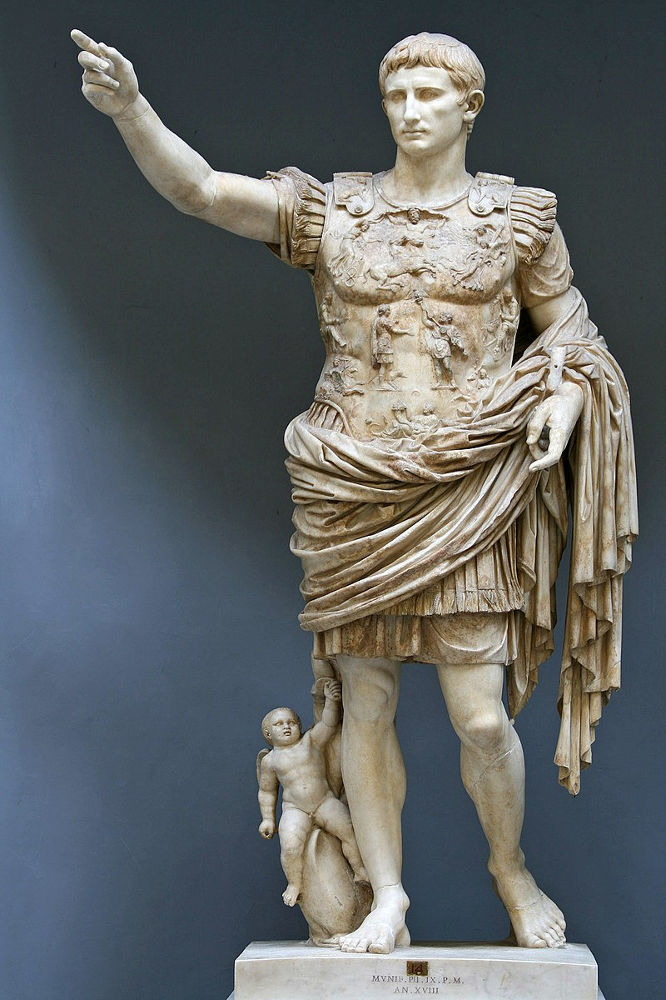

O cesarzach:
jakoz, ze cesarzy Rzym mial bardzo duzo (az 26!) to ta strona niestety nie bedzie miec wszystkich. Będzie tylko 6 :( (zdjecia tez sa interaktywne!)
Dynastia julijsko-klaudyjska
Oktawian August
Juliusz Cezar
Gajusz Juliusz Cezar